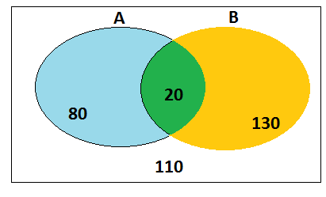

Análise Combinatória e Conjuntos
3!=3.2.1=6
4!=4.3.2.1=24
5!=5.4.3.2.1=120
Para saber se o problema é resolvido por Permutação,Arranjo,Combinação deve-se fazer a seguinte pergunta:
"O número de objetos é igual ao número de posições?"
Caso reposta=Não,pergunta-se se a ordem importa? Se resposta for Sim utiliza-se Arranjo,se resposta=não,utiliza-se combinação.
Permutação
Permutação Simples
A Permutação Simples se faz pelo uso da fórmula:
n!=n.(n-1).(n-2).(n-3).(n-x)
De modo que (n-x)=1
Permutação com Repetição
A Permutação com Repetição se faz pelo uso da fórmula:
Caso seja Arara:
(5!)/((3!).(2!))
Isso é resultado do número de letras divido pelo número que se repete 3xA=3! e 2xR=2!
Permutação Circular
A Permutação Circular é um caso exemplo de uma mesa redonda onde todos os lugares estão ocupados.
Pensa-se nesta mesa com 6 lugares
PC6=6!/6=(6-1)! Isso quer dizer que a resposta ou será 720/6 ou 5! que é o mesmo que 120
Arranjo
Arranjo já foi explicado acima
Aqui venho para mostrar a fórmula
An,k=n!/(n-k)!
Combinação
Como ja foi explicado acima
Colocarei aqui a fórmula da Combinação
Cn,p=n!/p!(n-p)! Com "p" menor que "n"
Conjuntos
O que são conjuntos?
Conjuntos são tipo pontos, difíceis de conceituar mais muito fáceis de entender representando-os.
Conjuntos podem ser definidos tanto por um saco de balas ou um laboratório da UNIFOA que tem um conjuntos de computadores
Eles podem vir representados de várias maneiras,dentre elas:
O conjunto representado pelos números de 1 até 10:
A={1,2,3,4,5,6,7,8,9,10}
Exemplo 2
A={XeN/1<=X<=10}
Exemplo 3
Usando Diagrama de Veen para contar números de pessoas que escolhem A ou B numa dada pesquisa(ou não escolhem nenhum):
